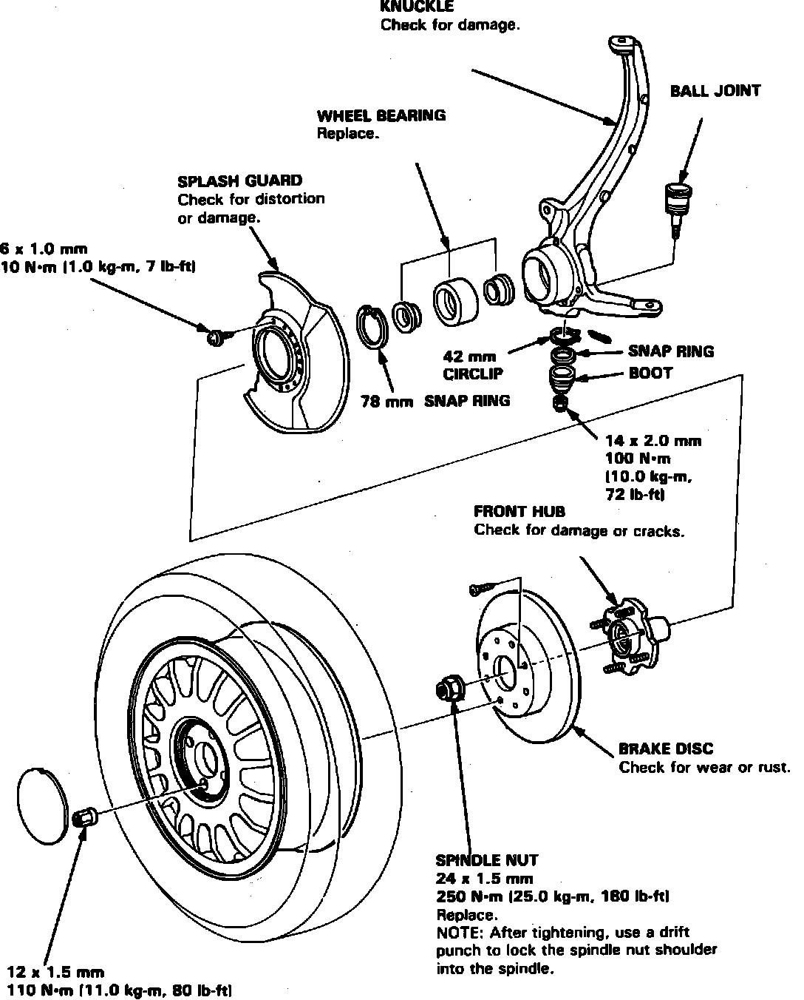

Front Steering Knuckle: Service and Repair
Fig. 16 Steering Knuckle & Hub Assembly:

1. Unstake spindle nut, then loosen spindle nut.
2. Loosen wheel lug nuts slightly.
3. Raise and support front of vehicle.
4. Remove front wheels and spindle nut, Fig. 16.
5. Remove the brake hose mounting bolts.
6. Remove the speed sensor from the knuckle and front lower arm, but do not disconnect it.
NOTE: Be careful when installing the sensor to avoid twisting wires.
7. Remove caliper attaching bolts, then using suitable wire hang aside.
8. Remove brake 6 mm disc attaching screws.
9. Install two 8 x 12 mm bolts to brake disc, turn each bolt two turns at a time until brake disc is removed.
10. Remove lower ball joint cotter pin and loosen nut halfway.
11. Using a suitable jawed puller, separate ball joint and lower arm.
12. Remove upper ball joint cotter pin and nut.
13. Separate upper ball joint from upper arm using a suitable ball joint remover.
14. Remove steering knuckle and hub assembly by sliding off driveshaft.
Fig. 17 Steering Knuckle & Hub Assembly:

Fig. 18 Steering Knuckle & Hub Assembly:

15. Remove splash guard attaching screws and the splash guard, Figs. 17 and 18.
16. Remove hub from steering knuckle using a suitable press.
17. Reverse procedure to install.